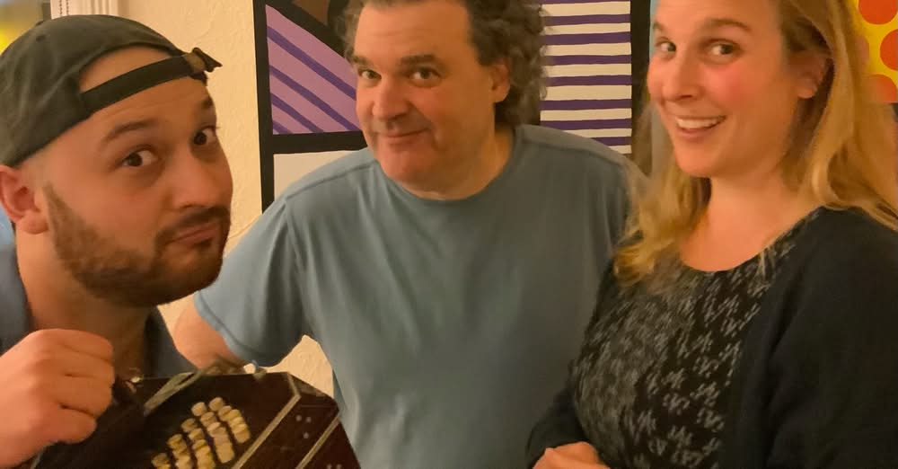
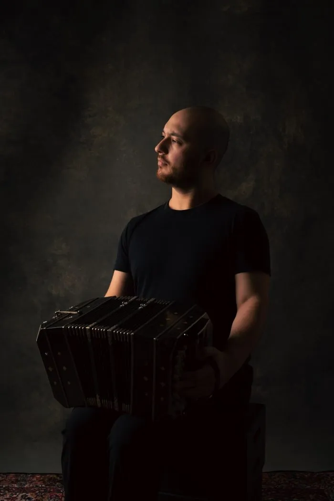

Trio · Seattle
Tango, South American folk, and something altogether their own. Cafecito brings together flute, bandoneón, and guitar in a sound rooted in Latin America and shaped by the musical backgrounds of three continents.
The group met through a shared love of tango and Brazilian music, and with connections spanning Venezuela, Colombia, and Mexico, their warm and expressive sound reflects that breadth — from traditional danceable tango to fresh arrangements of Stevie Wonder, Björk, and Heitor Villa-Lobos.
Book Cafecito
Cafecito draws from the full richness of Latin American music — the drama of classic tango, the lilt of South American folk traditions, and the warmth of Brazilian music. Alongside traditional repertoire, the group brings its own lens to unexpected sources, finding the common thread between a Piazzolla milonga and a Björk melody, or between Villa-Lobos and Stevie Wonder.
The trio
